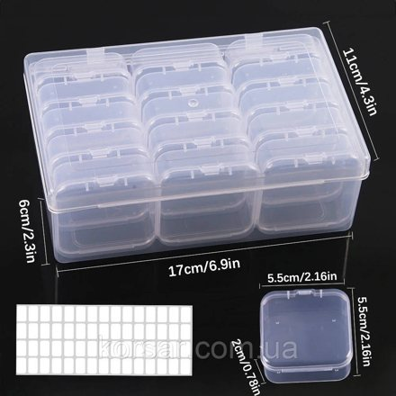
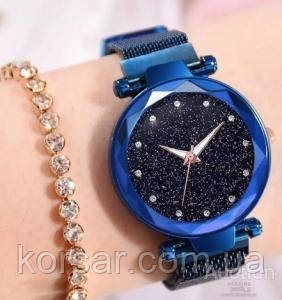
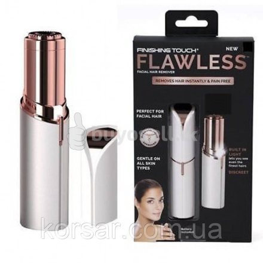
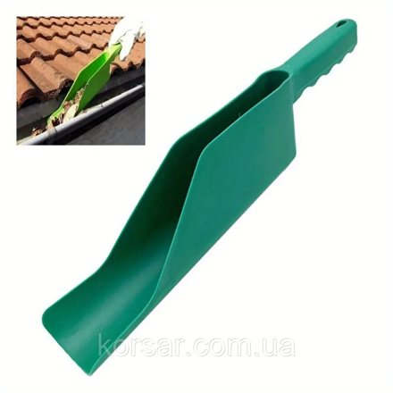
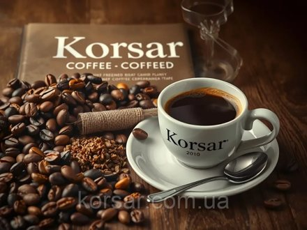

Інтернет-магазин KORSAR
Електротовари, товари для дому й авто, туризм, іграшки, подарунки та інші напрями в одному каталозі.
Оберіть напрям
Електротовари, зарядки, камери, кабелі

Дім, кухня, інструменти, техніка
Автотовари, генератори, GPS
Туризм, ліхтарі, оптика, басейни
Іграшки, творчість, канцтовари

Одяг, годинник, біжутерія

Здоров'я, краса, парфумерія

Сад, город, товари для тварин
Сувеніри, подарунки, декор

Бакалія та продукти
Для дорослих
- Увесь каталог
Усі товари магазину одним списком, з фільтрами за ціною та наявністю.
Товари з каталогу
- Пристрій "Антисон" Wake-UP + батарейка159 ₴В наявностіКод 108Купити Пристрій "Антисон" Wake-UP + батарейка
Графік роботи
- Пн–Пт: 10:00–18:00
- Сб: 10:00–16:00
- Нд: вихідний
Київський час. Адреса: проспект Свободи, 47, Одеса.